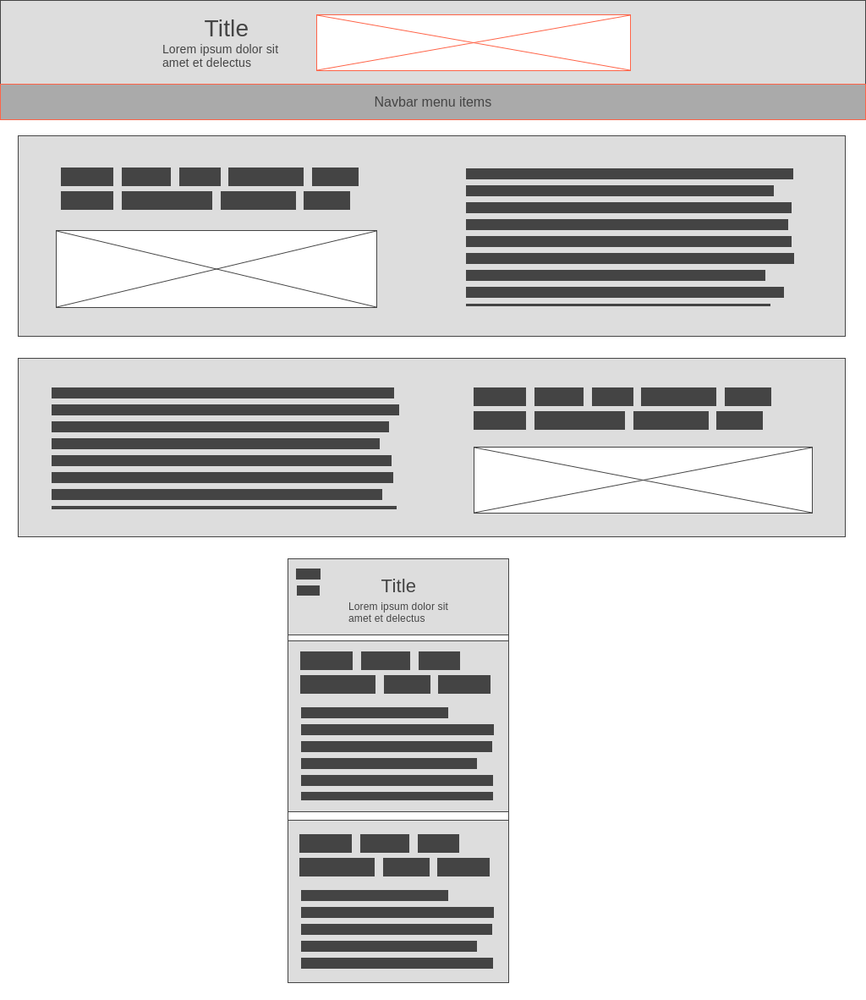

-
Site Name
Mesa Chamber of Commerce
-
Site Purpose
The Mesa Chamber of Commerce is an AI research facility for small growing businesses interested in incorperating AI bots into their employees' workflow. We create personalized AI bots and deploy them for you and your employees to enhance the work they do and make simple, redundant tasks easy to handle.
-
Scenarios
Businesses looking to join the chamber can find information about the benefits of using our AI and what they can accomplish with it. You can see the models that are offered and what are the most popular in different scenarios.
-
Color Schema
Blue, white, and gold
-
Typography
Dosis, sans-serif
-
Wireframe
